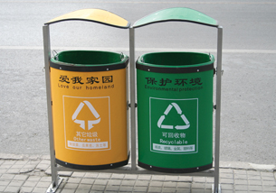

Unit C Conclusion

© Ray Yang/shutterstock
In Unit C you learned about hydrocarbons and their derivatives. You discovered how important hydrocarbons are to society. Not only do hydrocarbons provide an energy source, but they can also be chemically manipulated to produce a variety of organic compounds.
The organic compounds produced from petroleum are called petrochemicals. Petrochemicals are used in a wide variety of products ranging from structural materials to medicines.
You investigated the following module questions:
Module 5
- What is petroleum?
- What does Alberta’s petroleum industry do?
- Where do hydrocarbons come from?
- What are hydrocarbons and what makes them such an important class of compounds?
- What are some of the processes that occur within Alberta’s petroleum industry?
- What impact does the hydrocarbon industry have on Alberta’s economy and environment?
Module 6
- What kinds of chemical reactions are used to manipulate hydrocarbons in order to produce petrochemicals?
- How has the chemical industry responded to concerns about the environment?
- What are some of the processes that occur within Alberta's petrochemical industry?
You also investigated the local, provincial, national, and international impacts of the petroleum industry from a variety of perspectives, and you learned about the practices to be considered when greening chemical processes.
Crucial to these changing practices is the type of materials being produced, the toxicity of the materials, and the toxicity of by-products and other waste. Efficiency of reactions must also be considered. Efficiency can be achieved by using processes that have greater atom economy and by developing processes that use less energy and have a higher percentage reaction.
You should now be able to
- identify and explain how organic compounds are a common form of matter
- describe chemical reactions of organic compounds
 Self-Check
Self-Check
Complete the Unit C Diagnostic Self-Check to review the concepts, skills, and knowledge introduced and to assess your understanding of them.
If you have trouble answering any of the questions, try one or more of the following options:
- Go to the lesson(s) indicated for each question. Once there, review the information provided and the relevant sections of the textbook.
- View the hint associated with each question.
- Look at the answer and then work backward to understand the problem and its solution.
- Ask your teacher for help.
You have already reviewed your Modules 5 and 6 concept maps or graphic organizers. Now is a good time to give them another look and add any new connections or ideas to them.